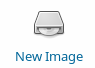
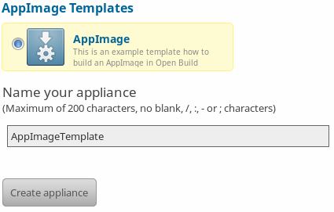

Using the Open Build Service¶
Open Build Service is a generic system to build and distribute packages from sources in an automatic, consistent and reproducible way. It allows you to build software for various package formats and distributions. Now it can also build AppImages that run on a variety of distributions.
The openSUSE Build Service is the public instance of the Open Build Service (OBS). This infrastructure can can be used for free by open source projects. However, you are not limited to it - you can set up your own Open Build Service instance if you like.
Contents
Differences to other methods of building AppImages¶
There are different ways to build AppImages. Why is using Open Build Service interesting?
If you are already using Open Build Service, then also generating an AppImage should be straightforward
You can use the public openSUSE Build Service instance and use the existing infrastructure to build and distribute your AppImage (for open source projects only)
You can build AppImages in “automatic, consistent and reproducible way”. This means that unlike when you build your AppImages on, e.g., Travis CI, where you can pull in arbitrarily changing build dependencies and AppImage ingredients from the net, your builds on Open Build Service can only use build dependencies and AppImage ingredients that have their source code in distribution repositories or on Open Build Service. While this may be a limitation in some cases (e.g., for agile/continuous builds), it means that the build result is much more reproducible
OBS helps you to keep the ingredients of your AppImage up-to-date all the time using proven distribution methodologies and tool, relieving the person or group providing AppImages from manual work as discussed here
OBS automatically builds a new AppImage for you if one if its ingredients is updated on OBS
OBS automatically signs AppImages using the user’s key on OBS
OBS automatically embeds update information into AppImages to enable binary delta updates using AppImageUpdate. This means that if in a 100 MB AppImage only 1 MB changed between versions, then the user has to download only 1 MB rather than 100 MB
The osc command line tool¶
While OBS can be used entirely through the web interface, it can be beneficial to use the osc command line tool. It is available as an AppImage from OpenSUSE’s download page. Since this page is mainly geared toward beginners, it mainly describes the web interface. However, using the command line tool may offer a quicker route for more experienced OBS users.
Setting up an account and a project¶
This page describes how to use the public openSUSE Build Service instance. If you use your own instance, things will probably be similar but may not be identical.
To set up an account, go to https://build.opensuse.org/ and click on “Sign Up” in the upper-right corner
Once you have an account, log in using it and click on “Home Project” in the upper-right corner. Every user has a home project. Think if it as a collection of source code packages that you build AppImages (and possibly other types of packages) from. Later on, you can add additional projects, and invite collaborators to them
Hello world¶
On the https://build.opensuse.org/ homepage, click on “New Image”.
Then select AppImage, and click “Create Appliance”.
Done! An AppImage of Leafpad, a simple text editor, will be built. You can use this template as a starting point to customize for other applications.
The following sections describe how to do the same manually.
Setting up an AppImage target for the project¶
You need to tell OBS that for all source code packages in your home project you want to generate AppImages. To enable a target for AppImage, you can either use the command line tool osc meta prj -e ... or use the OBS web interface:
Go to your home project
Click on “Advanced”
Click on “Meta”
Copy and paste the
<repository>tags from the following:
<project name="home:probono">
<title>probono</title>
<description/>
<person userid="probono" role="maintainer"/>
<publish>
<enable/>
</publish>
<repository name="AppImage.arm">
<path project="home:probono" repository="openSUSE_13.1"/>
<path project="OBS:AppImage" repository="AppImage.arm"/>
<arch>armv7l</arch>
<arch>aarch64</arch>
</repository>
<repository name="AppImage">
<path project="home:probono" repository="openSUSE_13.1"/>
<path project="OBS:AppImage" repository="AppImage"/>
<arch>x86_64</arch>
<arch>i586</arch>
</repository>
</project>
Note
The AppImage.arm repository is used for the ARM architectures for now. This will possibly change in the future.
Be sure to just insert the <repository> tags into your existing file. For AppImage, we need to select one of the build targets that is built in your obs project. In the example above, please make sure to replace home:probono with the actual name of the obs project where appimage.yml should look for its resources - this can be the current project, and even RPMs created by the same package work as resources for AppImage.
Also check if openSUSE_13.1 is still alive or use something slightly newer instead.
Use native AppImage build support¶
In order to build an AppImage you need to provide a file called appimage.yml. OBS needs to get all the required resources before building. This is needed in order to be able to track changes and to find out whether a rebuild is needed, and to provide the resources in a secured and reproducible environment without network access.
The build: section can be used to define resources which are required to build. This can be binary packages (currently only rpm) or URLs to any other source control management systems or file. The binary packages listed in the build section get installed to the build environment, but not extracted into the AppDir.
The packages listed in the ingredients section do not get installed into the build environment but get extracted into the AppDir.
URLs for the supported source control management systems (git, svn, cvs, hg, bzr) get handled via the appimage source service, which is a part of obs-service-tar_scm. It is downloading the sources and provides them to the build system as directory structure.
Todo
not yet implemented URLs to files get handled via the download_files source service. It is handy to provide single files to the build.
Scripts can be executed in the form of the script hooks of the appimage.yml file.
Note
Recipe files are not supported, anything they can do can be done inside the script sections of appimage.yml.
Note
It is optional to either
create the AppImage root via packages by using the ingredients section. This is useful especially for larger software, because it avoid the need of a recompilation and just repackages the content of binary packages.
create the AppImage root only from source using the scripts. This is useful when you want to avoid to build a binary package first.
Both approaches can also get combined if wanted.
appimage.yml file¶
Please note that it uses the following environment variables which are provided by the build system:
BUILD_SOURCE_DIR: The absolute directory name where all source files or directories are hostedBUILD_APPDIR: The directory which will get packaged as AppImage file
Most simple example¶
This APPIMAGE_NAME application will get package into an .AppImage file just by installing the RPM_PACKAGE_NAME. The binary can get patched automatically when using the binpatch: true option
 From which repositories can rpms be installed? Only my own or those of all OBS users?
From which repositories can rpms be installed? Only my own or those of all OBS users?
Can additional repositories be added?
app: APPIMAGE_NAME
binpatch: true
ingredients:
packages:
- RPM_PACKAGE_NAME
script:
- cd $BUILD_APPDIR/
- cp $BUILD_APPDIR/usr/share/applications/NAME.desktop $BUILD_APPDIR
- cp $BUILD_APPDIR/usr/share/pixmaps/NAME.png $BUILD_APPDIR
Simple example building from source¶
app: QtQuickApp
build:
packages:
- linuxdeployqt
- pkgconfig(Qt5Quick)
git:
- https://github.com/probonopd/QtQuickApp.git
script:
- cd $BUILD_SOURCE_DIR/QtQuickApp*
- qmake-qt5 PREFIX=/usr
- make INSTALL_ROOT=$BUILD_APPDIR install
- unset QTDIR; unset QT_PLUGIN_PATH ; unset LD_LIBRARY_PATH
- linuxdeployqt $BUILD_APPDIR/usr/share/applications/*.desktop -qmldir=$BUILD_SOURCE_DIR/ -bundle-non-qt-libs -verbose=2
- linuxdeployqt $BUILD_APPDIR/usr/share/applications/*.desktop -qmldir=$BUILD_SOURCE_DIR/ -bundle-non-qt-libs -verbose=2
We have to also upload a file called _service containing
<services>
<service name="appimage"/>
</services>
When trying this on a private OBS instance, please make sure to have obs-service-appimage installed. This can be done e.g. on a Leap 42.1 machine with:
zypper addrepo http://download.opensuse.org/repositories/openSUSE:Tools/openSUSE_42.1/openSUSE:Tools.repo
zypper ref
zypper in obs-service-appimage
Options inside of the build section¶
you can add multiple items in the sections.
build:
packages:
- [SINGLE BINARY PACKAGE NAME]
git: # can be also svn, cvs, hg, bzr
- [URL TO SCM REPOSITORY]
files:
- [URL TO A RESOURCE]
Inspecting the results¶
Be sure to download the resulting AppImage from OBS and test it on your target system(s). It is recommended to test at least on the oldest still-supported Ubuntu LTS, the recent Ubuntu, the oldest still-supported openSUSE Leap, possibly he latest openSUSE Tumbleweed, CentOS 7, and the latest Fedora release (although you may to choose to support different target systems).
Working examples¶
Feel free to put yours here, too.
https://build.opensuse.org/package/show/home:probono/QtQuickApp?repository=AppImage
https://build.opensuse.org/package/show/home:probono/DSRemote?repository=AppImage
https://build.opensuse.org/package/show/home:probono/Qactus?repository=AppImage
https://build.opensuse.org/package/show/home:probono/leafpad?repository=AppImage
https://github.com/olav-st/screencloud/blob/master/deploy/linux/appimage.yml
https://build.opensuse.org/package/view_file/home:pbek:QOwnNotes/desktop/appimage.yml?expand=1
https://build.opensuse.org/package/view_file/home:lachs0r:taisei/taisei/appimage.yml?expand=1
Continuous builds with GitHub and OBS¶
If your source code lives on GitHub, then you can set up a mechanism that makes GitHub inform OBS about any changes to the source code, and trigger a rebuild automatically.
A token needs to be generated, this can be done using the osc OBS command line client:
sudo apt update && sudo apt install osc # or your package manager's equivalent
osc token --create
If you have already generated a token in the past, you can show it with
osc token
On the GitHub project page, click on “Settings”, then click on “Integrations & services”, then click on “Add service”, enter “Obs” and select it. For example, for the QtQuickApp project go to https://github.com/probonopd/QtQuickApp/settings/installations, and corresponding to https://build.opensuse.org/package/show/home:probono/QtQuickApp entered home:probono for the project and QtQuickApp for in the Package field, as well as the token generated above in the “Token” field. Please note that you need to supply your own username and project name instead of the one in the example above.
Now, whenever you do a git push to my QtQuickApp project, OBS will build it for me.